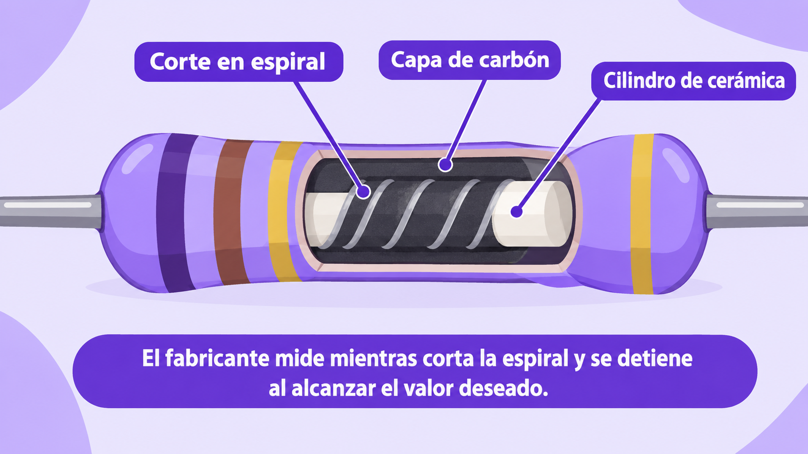
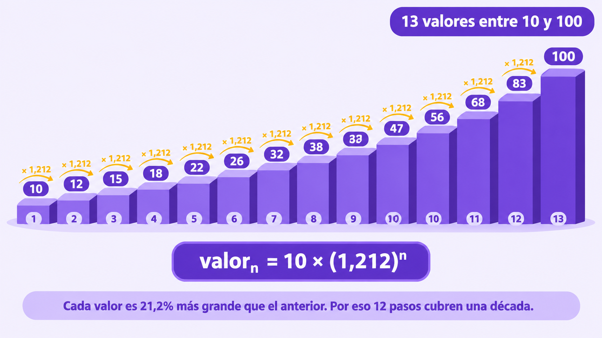
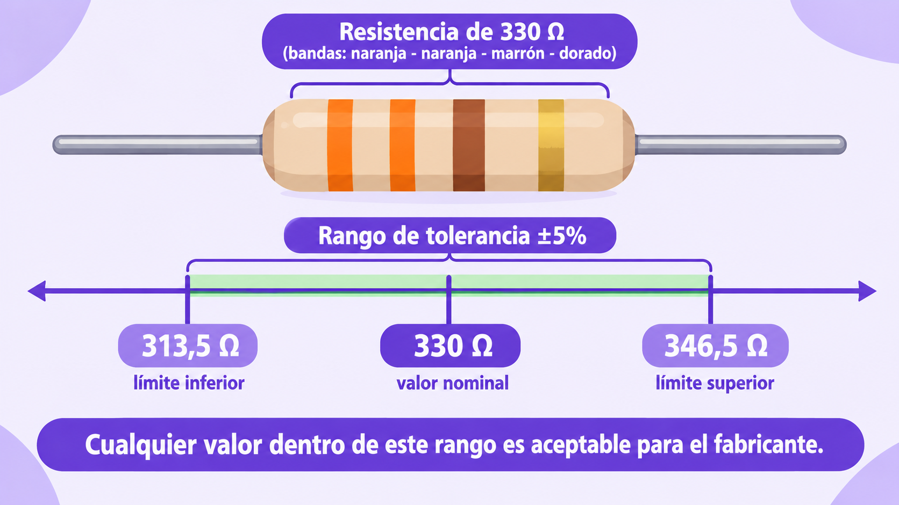
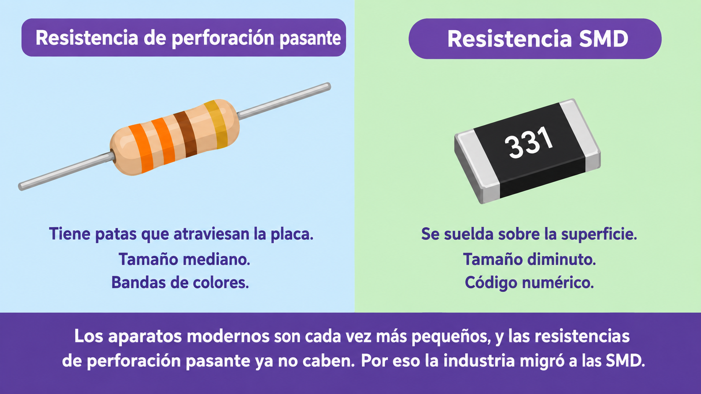
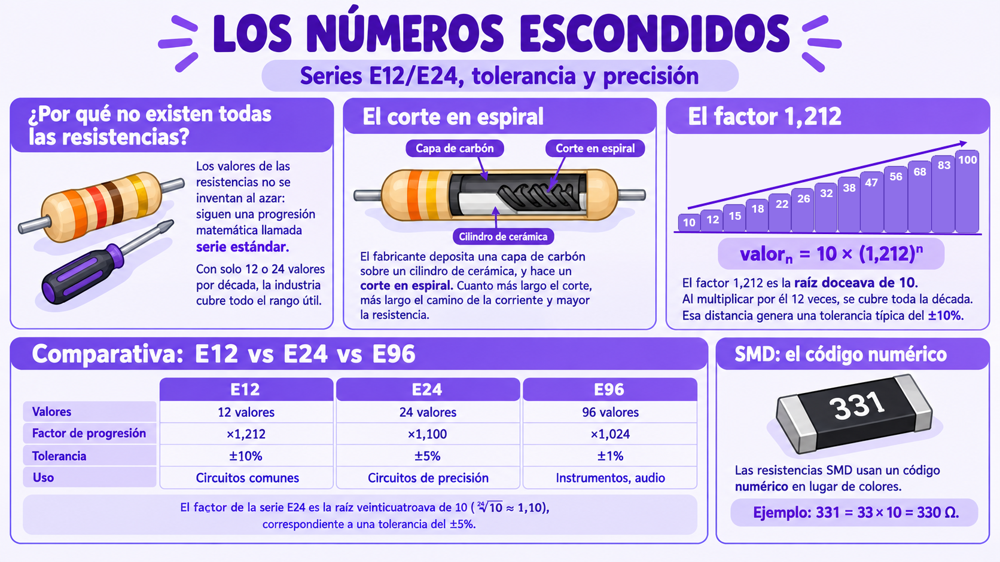

Imagina que necesitas una resistencia de exactamente 9.847 Ω. Vas a la tienda y pides una. El vendedor te mira con extrañeza: "Esa no existe. ¿No te sirve una de 10 kΩ?"
¿Por qué no existe? Si un fabricante pudiera hacer cualquier valor, ¿por qué no los hace todos? La respuesta está en un principio estructural de la ingeniería: los valores de los componentes no se inventan al azar, siguen una progresión matemática.
A esa progresión se le llama serie estándar. Las más comunes son las series E12 y E24, y definen qué valores se fabrican en todo el mundo.
💡 Idea clave: fabricar resistencias de valores arbitrarios sería un caos. Con solo 12 o 24 valores por década, la industria cubre todo el rango útil con suficiente precisión. Es un principio de economía estructural: menos variedad, más disponibilidad.
Pero antes de hablar de las series, hay una pregunta previa: ¿cómo logra el fabricante que una resistencia valga exactamente 330 Ω y no 350 Ω ni 300 Ω?
La respuesta es sorprendente: no mezcla materiales al azar. El proceso es el siguiente:

💡 Idea clave: el valor de una resistencia no es un accidente: es el resultado de una operación mecánica precisa. El corte en espiral es lo que permite "sintonizar" cada resistencia a un valor específico.
Las series estándar no son caprichosas: siguen una progresión geométrica. Cada valor se obtiene multiplicando el anterior por un factor constante. Ese factor es lo que garantiza que no haya "huecos" grandes entre un valor y el siguiente.
En la serie E12, cada valor se obtiene multiplicando el anterior por aproximadamente 1,212. Ese número no es un capricho: es la raíz doceava de 10, que en notación matemática se escribe así:
Su propiedad es notable: al multiplicar ese factor por sí mismo 12 veces, se llega exactamente a 10. Es decir, con solo 12 pasos se cubre toda la década (de 10 a 100).
💡 ¿Por qué 12 valores y no más? Porque 12 valores por década generan una distancia promedio del 21% entre un valor y el siguiente. Esa distancia es la que permite una tolerancia típica del ±10% en la serie E12. Si hubiera menos valores, la tolerancia tendría que ser más amplia; si hubiera más, la tolerancia podría ser más estrecha.
Ese 21% no es un número inventado: surge directamente del factor. Si expresamos el incremento relativo en porcentaje:
De ahí surge el ~21%: cada valor de la serie E12 es aproximadamente un 21,2% más grande que el valor anterior. Y esa distancia entre valores consecutivos es la que justifica una tolerancia típica del ±10% (la mitad del incremento, para que los rangos de tolerancia de dos valores vecinos no se solapen demasiado).
Veamos cómo funcionan esos 12 pasos usando el factor 1,212. Comparativa entre la progresión matemática teórica (factor 1,212) y los valores estandarizados por la norma industrial IEC 60063 para la serie E12:
| Paso (n) | Cálculo teórico (10 × 1,212ⁿ) | Redondeo matemático | Serie E12 (IEC 60063) |
|---|---|---|---|
| 0 | 10 × 1,212⁰ = 10,000 | 10 | 10 |
| 1 | 10 × 1,212¹ = 12,120 | 12 | 12 |
| 2 | 10 × 1,212² ≈ 14,689 | 15 | 15 |
| 3 | 10 × 1,212³ ≈ 17,804 | 18 | 18 |
| 4 | 10 × 1,212⁴ ≈ 21,578 | 22 | 22 |
| 5 | 10 × 1,212⁵ ≈ 26,152 | 26 | 27 |
| 6 | 10 × 1,212⁶ ≈ 31,697 | 32 | 33 |
| 7 | 10 × 1,212⁷ ≈ 38,417 | 38 | 39 |
| 8 | 10 × 1,212⁸ ≈ 46,561 | 47 | 47 |
| 9 | 10 × 1,212⁹ ≈ 56,432 | 56 | 56 |
| 10 | 10 × 1,212¹⁰ ≈ 68,395 | 68 | 68 |
| 11 | 10 × 1,212¹¹ ≈ 82,895 | 83 | 82 |
| 12 | 10 × 1,212¹² ≈ 100,469 | 100 | — (siguiente década) |

📌 Importante: los redondeos matemáticos coinciden con la serie E12 en la mayoría de los pasos, pero difieren en algunos (26 → 27, 32 → 33, 38 → 39, 83 → 82). La razón es que la serie E12 no es el resultado exacto de redondear la progresión geométrica, sino una aproximación práctica que los fabricantes eligieron para tener números "bonitos", fáciles de recordar y de pintar con bandas de colores. La norma IEC 60063 es la que define oficialmente esos valores.
Los valores se redondean a números "bonitos" para que sea fácil recordarlos y pintarlos con bandas de colores. Pero la estructura matemática subyacente es la que garantiza que siempre haya un valor estándar razonablemente cerca del valor que necesitas.
| Serie | Valores por década | Factor | Tolerancia típica | Uso principal |
|---|---|---|---|---|
| E12 | 12 valores | ×1,212 | ±10% | Circuitos comunes (LEDs, botones) |
| E24 | 24 valores | ×1,100 | ±5% | Circuitos con más precisión |
| E96 | 96 valores | ×1,024 | ±1% | Instrumentos, audio de alta calidad |
🔢 La serie E24: el doble de precisión. La serie E24 tiene 24 valores por década en lugar de 12. Su factor constante es la raíz veinticuatroava de diez:
Ese factor corresponde a una tolerancia del ±5%. Al tener el doble de valores, la distancia entre uno y el siguiente se reduce a la mitad (~10%), lo que permite una tolerancia más estrecha.
💡 Ejemplo práctico: cuando calculaste 330 Ω para proteger un LED, ese valor no apareció por casualidad. Es uno de los valores de la serie E12. Si el cálculo te hubiera dado 315 Ω, el valor comercial más cercano hacia arriba sería 330 Ω.
Una resistencia de 330 Ω no vale exactamente 330 Ω. Vale aproximadamente 330 Ω. La diferencia entre el valor ideal y el valor real se llama tolerancia, y es una propiedad estructural de todos los componentes.
La tolerancia es un porcentaje. Si una resistencia tiene un valor de 330 Ω con tolerancia ±5%, el valor real puede estar entre:
Cualquier valor dentro de ese rango es aceptable. El fabricante garantiza que la resistencia real estará dentro de ese margen, ni más ni menos.

💡 La tolerancia no es un defecto: es una promesa. El fabricante no puede garantizar un valor exacto, pero sí puede garantizar un rango. Y ese rango es suficiente para la mayoría de circuitos.
Aquí viene la parte más interesante: la tolerancia no es un valor arbitrario. Está directamente relacionada con la cantidad de valores que tiene la serie.
Piénsalo: si dos valores consecutivos de una serie están muy cerca entre sí, la tolerancia puede ser muy estrecha (porque siempre habrá un valor estándar muy cerca del que necesitas). Si están lejos, la tolerancia debe ser más amplia.
| Serie | Valores por década | Distancia entre valores | Tolerancia típica |
|---|---|---|---|
| E12 | 12 valores | ~21% | ±10% |
| E24 | 24 valores | ~10% | ±5% |
| E96 | 96 valores | ~2,5% | ±1% |
Observa la relación: más valores en la serie → menor distancia entre ellos → tolerancia más estrecha. Es un equilibrio entre la variedad de fabricación (fabricar más valores distintos) y la precisión garantizada (asegurar que cada valor esté dentro de un rango estrecho).
💡 Regla de oro: la tolerancia acompaña a la serie. Si eliges una resistencia de la serie E12, su tolerancia típica será ±10%. Si necesitas ±1%, tendrás que elegir una resistencia de la serie E96.
En una resistencia de 4 bandas, la última banda (la que está más separada) indica la tolerancia. Los colores más comunes son:
La ausencia de banda de tolerancia (en resistencias muy antiguas) significa ±20%.
Si abres un celular moderno y miras su placa, no verás resistencias con bandas de colores. Verás rectángulos diminutos, casi del tamaño de una miga de pan. Son resistencias SMD (Surface Mount Device, o "dispositivo de montaje superficial").
Las resistencias tradicionales (llamadas de perforación pasante, en inglés, "through-hole") tienen patas que atraviesan la placa. Las SMD se soldan directamente sobre la superficie, sin patas. Eso las hace mucho más pequeñas y permite fabricar aparatos más compactos.
Pero como son tan pequeñas, no cabe pintarles cuatro bandas de colores. En su lugar, llevan un código numérico de 3 o 4 dígitos impreso en la superficie.

El código SMD más común usa tres dígitos:
💡 Ejemplo: una resistencia SMD marcada "331" vale 33 × 10 = 330 Ω. La misma que leerías en una resistencia de colores como naranja-naranja-marrón.
⚠️ Ojo al código SMD con "R": cuando aparece una R en el código, representa el punto decimal. Por ejemplo, "4R7" significa 4,7 Ω. Es una convención para no confundir con otro número.
No fue una moda: fue una necesidad estructural. Los aparatos modernos son cada vez más pequeños, y las resistencias de perforación pasante ya no caben. Además, las máquinas de ensamblaje automático colocan resistencias SMD a una velocidad imposible para un humano.
Aun así, el código de colores sigue vigente en kits educativos, reparaciones y prototipos. Conocer ambos códigos te hace un ingeniero más completo.
Vas a convertirte en un clasificador de resistencias. Te darán un grupo de resistencias mezcladas, y tu misión es leerlas, verificar su valor con el multímetro y clasificarlas según su tolerancia. Este es el trabajo real de un ingeniero de control de calidad.
💡 Dos formas de hacer este taller: puedes hacerlo en el aula (con resistencias del kit del colegio y un multímetro) o llevarlo a casa si tienes acceso a un multímetro. Si no lo tienes, el taller se puede hacer solo con la lectura de colores.
| # | Valor leído | Tolerancia | Rango aceptable | Valor medido | ¿Dentro del rango? |
|---|---|---|---|---|---|
| 1 | ☐ Sí / ☐ No | ||||
| 2 | ☐ Sí / ☐ No | ||||
| 3 | ☐ Sí / ☐ No | ||||
| 4 | ☐ Sí / ☐ No | ||||
| 5 | ☐ Sí / ☐ No | ||||
| 6 | ☐ Sí / ☐ No | ||||
| 7 | ☐ Sí / ☐ No | ||||
| 8 | ☐ Sí / ☐ No |
Cuando termines, escribe una nota breve al final de tu hoja de registro. No es una tarea, es una reflexión. Puedes escribir sobre:
Si una resistencia dice 330 Ω ±5%, y al medirla obtienes 335 Ω, ¿está dentro de especificación? Justifica tu respuesta con el cálculo.
💡 ¿Sabías que…? En la industria, un lote de resistencias que sale de la fábrica se audita tomando una muestra al azar y verificando que todas estén dentro del rango de tolerancia. Ese proceso se llama control de calidad estadístico, y es exactamente lo que acabas de hacer tú.
⚠️ Seguridad: nunca midas resistencias que estén soldadas a una placa conectada a la corriente. Desconecta el aparato y/o retira las pilas antes de manipularlo. Y recuerda: para medir resistencia, las puntas del multímetro van sobre la resistencia suelta o sobre la placa sin energía.
Antes de que existieran las series E12 y E24, los fabricantes de resistencias producían valores arbitrarios. Cada empresa inventaba su propia lista. Comprar componentes era un caos: lo que funcionaba con una marca no servía con otra.
La solución no vino de un ingeniero eléctrico, sino de un ingeniero militar francés que estaba resolviendo un problema completamente distinto: cómo estandarizar los cables de los globos aerostáticos del ejército.
Charles Renard fue un ingeniero y oficial del ejército francés. En la década de 1870, se enfrentó a un problema práctico: el ejército necesitaba fabricar cables de distintos diámetros para sus globos aerostáticos. Pero fabricar cada diámetro posible era imposible e innecesario.
Renard propuso una idea revolucionaria: en lugar de fabricar cientos de diámetros distintos, fabricar solo unos pocos, espaciados matemáticamente. Cada nuevo diámetro sería un porcentaje fijo más grande que el anterior. Así, con solo 5, 10 o 20 valores, se cubría todo el rango útil.
Esa progresión se conoce hoy como serie de Renard, y fue adoptada por la industria eléctrica para estandarizar los valores de las resistencias. Nacieron así las series E6, E12, E24, E48, E96 y E192, donde la "E" honra a la Electricité (electricidad en francés).
Lo notable es que la progresión de Renard no era un invento arbitrario: seguía un patrón matemático que garantizaba que cualquier valor necesario estaría a menos de un pequeño porcentaje de distancia del valor estándar más cercano. Esa es la verdadera elegancia de la ingeniería estructural: resolver un problema con el menor número de piezas posible.
Hoy, cuando pides una resistencia de 10 kΩ en cualquier tienda del mundo, estás usando el sistema que Renard diseñó para los globos aerostáticos hace más de 150 años.
La lección: las soluciones buenas no vienen del capricho, sino de la estructura matemática. Renard no eligió los valores de las series al azar: los calculó. Y esa estructura sigue funcionando más de un siglo después.
Fuentes: archivos históricos de la Comisión Electrotécnica Internacional (IEC) y biografías de Charles Renard.
Dale play y en 6 minutos descubrirás:
💡 Escúchenlo en familia y comenten qué otros códigos usan números (por ejemplo: cédulas, placas, precios, contraseñas) para representar información, además del código de colores.